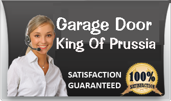
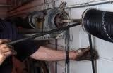
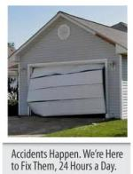
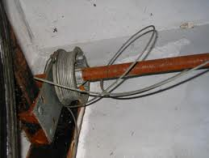
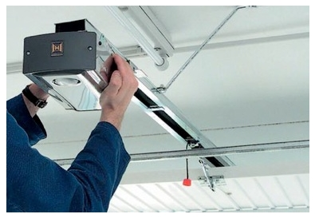

Garage Door King Of Prussia
We offer Fast Reliable
- 24 hour garage door repair.
- Garage door opener and gates
- Repair Springs, cable and rails
- Residential & Commercial Garage door
Call today for a free estimate
610-589-0067
OUR SERVICES
- Garage Door Repair
- Commercial Garage Door
- Residential Garage Door
- Garage Door Spring Repair
- Garage Door Installation

- 
Garage Door Repair King Of Prussia
We've repaired every type of garage door, and garage door opener. Our 24 x 7 service technicians are there for you when you really need us. Our repair service includes your annual All-Point Safety Inspection. We can also replace damaged springs, drums, and rollers, replace broken or damaged panels, and replace door openers and receivers. call 610-589-0067 for an appointment
Springs Due to normal wear and tear of the pressure and weight of the garage door, springs will eventually lose force or break. Our technicians can adjust the tension of older springs or replace them, as well as replacing broken springs.

In King Of Prussia PA garage doors we Understand your needs of good Functioning garage door
Pannels Inclement weather and accidents can cause damage to garage door panels. We can replace a single panel without having to replace the entire door. We carry many types of panels in stock. Call today to see if we have your panel in stock or to schedule an appointment with one of our technicians. .

Drums & Rollers The constant stress and movement of the garage door can cause cables to become loose or break. Our service technicians have cables and drums in stock and can repair or replace them and getting your system back up and running .

Off tracks The constant stress and movement of the garage door can cause cables to become loose or break. Our service technicians have cables and drums in stock and can repair or replace them and getting your system back up and running .
King Of Prussia Garage Door Repair the need for a service provider for your spring door repair doesn’t require much effort because King Of Prussia Garage Doors Company is always here for you. Just contact us and we’ll do the job.
We can fix the spring by removing the rusts and other problems. If ever it’s already worn out, we have available springs with different brands and sizes but everything is made from quality materials. Don’t hesitate to ask us for help
because we never charge high on our customers because we understand your financial circumstance. You want to get most out of your money especially in tough economic times like this. Despite of our low rates, our services remain high
because you’re the boss. If you haven’t gotten any door opener for your garage, better ask us for installation. Let our experts do the job and you’ll be surprised with our speed and quality of work. We inspect your garage gate first
before placing the opener to ensure that everything will work fine once the knob or lever is in proper place. King Of Prussia Garage Doors also provide the door opener for you and we have a wide list of door openers to choose from.
Don’t worry about the price and quality because we try to reduce the price without sacrificing the durability and effectiveness of the products made by reputable makers.
What we mean here is at King Of Prussia we prioritize our customer’s needs than our personal happiness. Say for example, during the evenings, holidays, and weekends, these are supposed to be our free time, but we sacrifice
our happiness in favor of our client’s welfare. When you call us during emergencies, we entrust our skilled repairmen to go directly to your homes or business establishment to provide you the necessary help in repairing your broken
garage door. What is important to us, is YOU.

We have a remarkable history of garage door services that is definitely
talked about and we believe our five star rating comes from our efficient and world class commercial and residential garage doors as well as services such as repair, replacement and installation of various garage doors parts from door
openers, cables, torsions, and springs. King Of Prussia Garage Door houses different models and styles of garage doors that you really would love to have. When you see our display, you will be mesmerized at the exquisite designs that
separate us from other garage door companies here in King Of Prussia r />